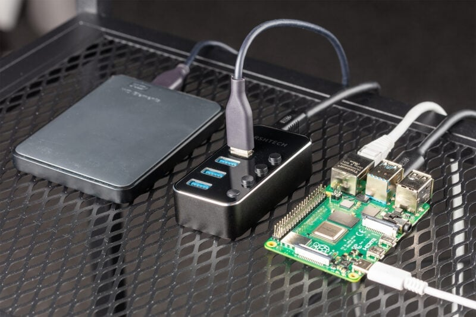

🖥️ Descripción del Proyecto

Este proyecto consiste en la implementación de un servidor NAS (Network Attached Storage) utilizando una Raspberry Pi 3. El objetivo es centralizar archivos y copias de seguridad en un solo lugar, accesibles desde cualquier dispositivo de la red local mediante protocolos como SMB o mediante software como OpenMediaVault.
⚡ Justificación
Se elige la Raspberry Pi 3 debido a su bajo consumo energético (ideal para estar encendida 24/7) y su costo reducido en comparación con servidores comerciales. Además, permite un control total sobre la privacidad de los datos, eliminando la dependencia de servicios de terceros como Google Drive o Dropbox.
🧰 Información Técnica

Para el montaje se requiere el sistema operativo Raspberry Pi OS Lite, una unidad de almacenamiento externa (HDD/SSD) y una conexión estable vía Ethernet. Es fundamental configurar permisos de usuario, montaje automático de unidades y asegurar el acceso mediante SSH para la administración remota del servidor.